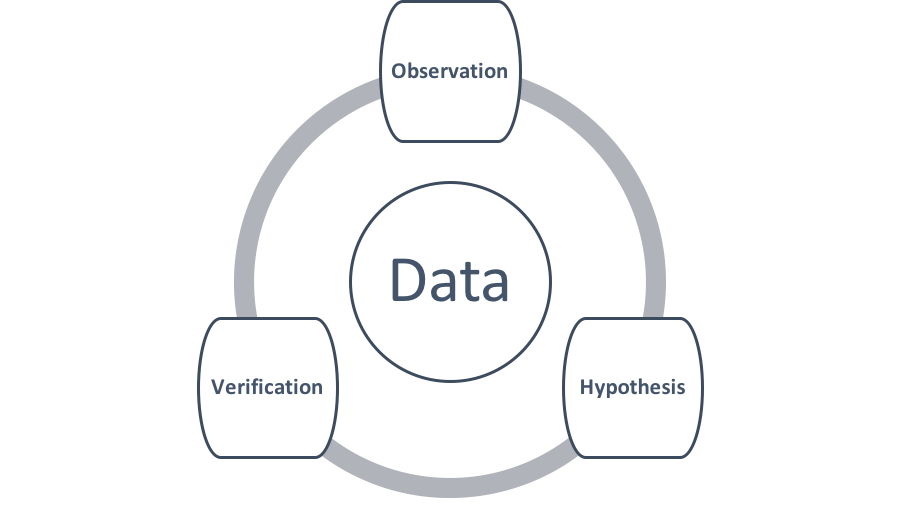

Scientific theories make testable claims that future observations might reveal to be false (Popper, 1959).

"We must all accept that science is data and that data are science, and thus provide for, and justify the need for the support of, much-improved data curation." (Hanson, Sugden, & Alberts, 2011)